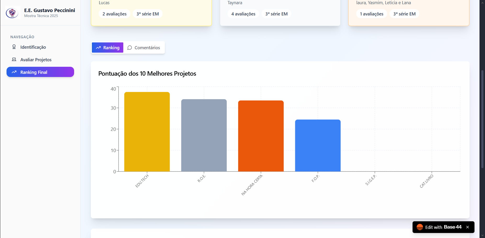

Feedback Estruturado para Melhoria
O FOP fornece à equipe pedagógica uma ferramenta poderosa para coletar feedback sobre métodos de ensino e infraestrutura. Ele suporta tanto respostas objetivas quanto qualitativas, fundamentais para a tomada de decisões baseadas em dados.
Análise de Resultados
- Visualização de Dados em Gráficos (Dashboard)
- Coleta de dados objetiva e qualitativa
- Facilita a análise de desempenho
Implementação
Plataforma: Base44, que permite a criação de questionários totalmente customizáveis.
Interface: Painel de controle simples para visualização dos resultados em tempo real.
Diferencial: Processamento automático dos dados coletados.
Visualização do Painel de Gráficos

Tela de Dashboard com os gráficos de opinião. (Substitua esta imagem)
Acesse o Formulário F.O.P Online
Explore a funcionalidade completa do projeto através do link de demonstração abaixo.
Ver Projeto